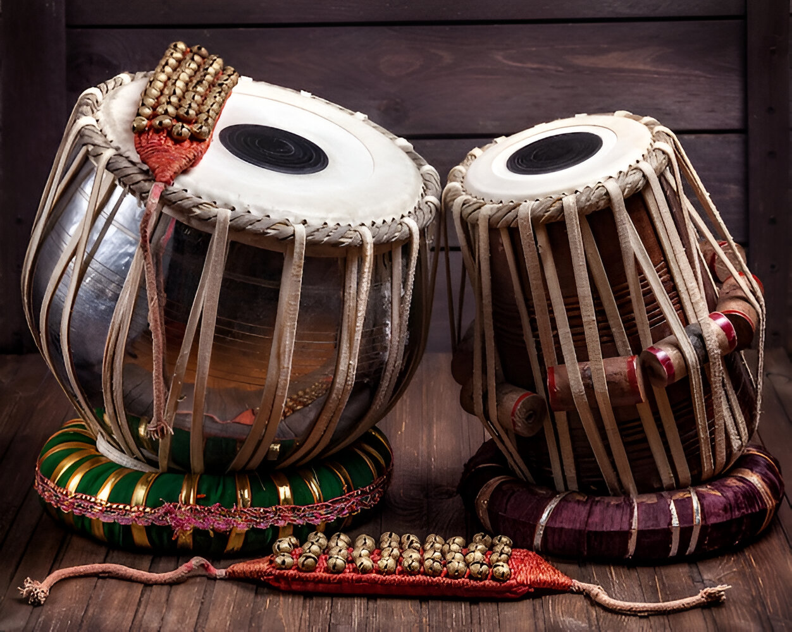
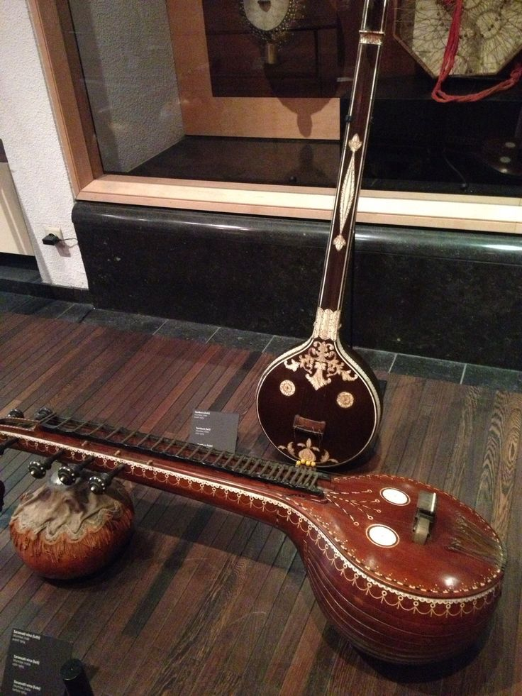
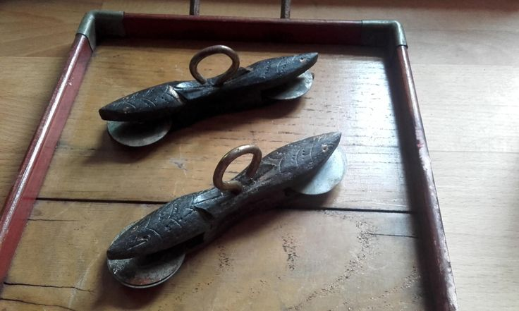
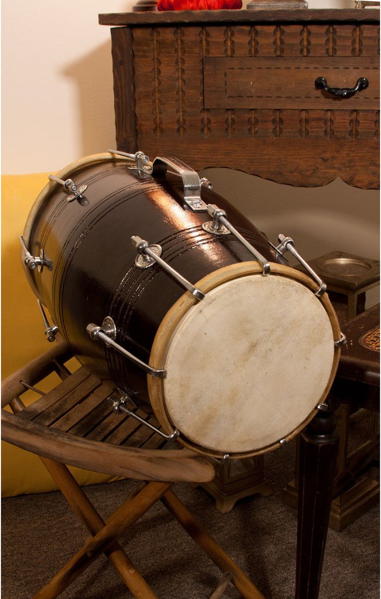
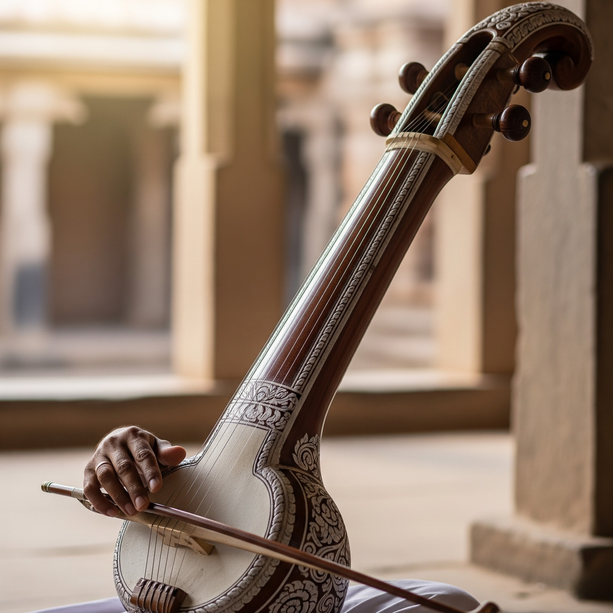

The veena is a traditional Indian string instrument, known for its deep cultural
significance and melodious sound. It features a large, resonant body with several strings, and is played by
plucking the strings while pressing them against frets. The veena is often associated with classical Indian
music and is considered a symbol of art, learning, and wisdom.

Tabla
The tabla is a traditional Indian percussion instrument, consisting of a pair of
hand-played drums. It is known for its intricate rhythms and is widely used in Indian classical music, as
well as in popular and devotional music. The tabla player uses their fingers and palms to produce a wide
range of sounds and dynamics, making it a versatile and expressive instrument.

Sitar
The sitar is a plucked string instrument used in Indian classical music. It has a
long neck and a gourd-shaped body, and is known for its distinctive sound, which is produced by plucking the
strings with a plectrum while pressing them against the frets with the fingers. The sitar is often
associated with the rich cultural heritage of India and is widely used in both classical and contemporary
music.

Kartal
The kartal is a traditional Indian percussion instrument, consisting of a pair of
hand-held wooden clappers. It is often used in folk music and devotional songs, providing a rhythmic
accompaniment. The kartal is played by striking the two pieces of wood together, producing a sharp and
resonant sound that adds to the festive atmosphere of celebrations and rituals.
Bansuri
The bansuri is a traditional Indian bamboo flute, known for its sweet and soothing
sound. It is an essential instrument in Indian classical music and is often used in devotional and folk
music as well. The bansuri is played by blowing air into one end while covering and uncovering the finger
holes to create different notes. Its melodic and expressive qualities make it a favorite among musicians and
listeners alike.

Dholak
The dholak is a two-headed hand-drum from India, widely used in folk and
devotional music. It has a cylindrical shape and is played with the hands, producing a rich and resonant
sound. It is often used in traditional celebrations.

Ravanahatha
The ravanahatha is a traditional bowed string instrument from India, known for its
unique sound and playing technique. It has a long neck and a resonator made from a gourd, and is played with
a bow. The ravanahatha is often associated with folk music and storytelling traditions, and is considered
one of the precursors to the modern violin.
Shehnai
The shehnai is a traditional Indian wind instrument, similar to an oboe, known for
its distinct and melodious sound. It is often played at weddings and religious ceremonies, and is considered
a symbol of auspiciousness in Indian culture. The shehnai is made from a long wooden tube with a flared bell
at one end, and is played by blowing air into a double reed mouthpiece.